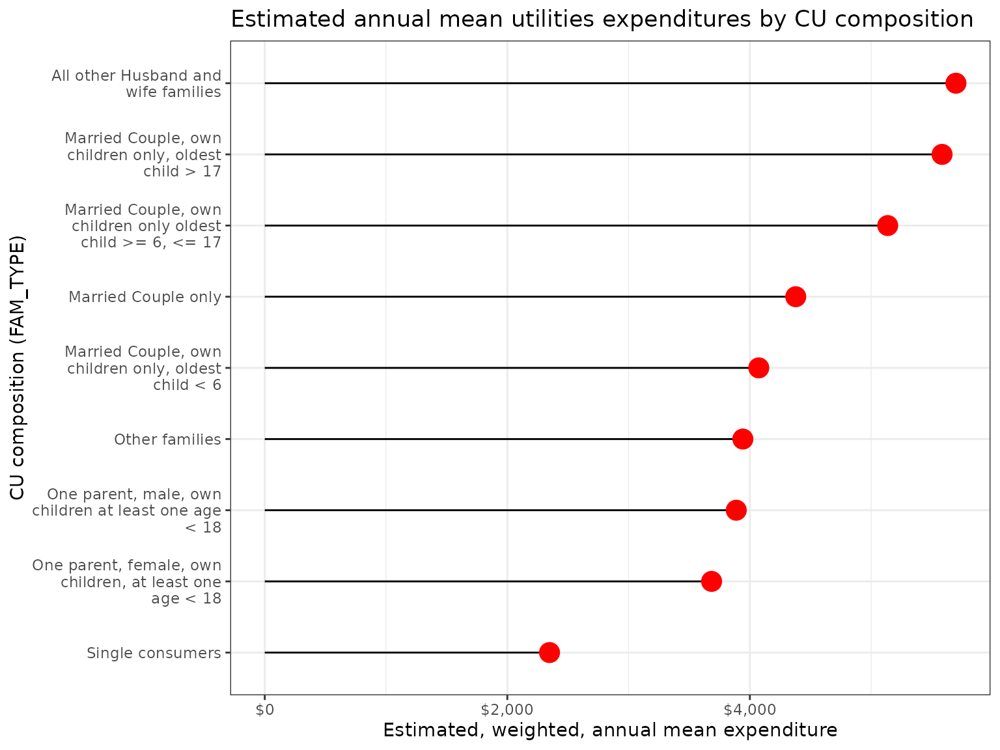

Accounting for Inconsistent Code Definitions in CE PUMD
Source:vignettes/articles/inconsistent-code-definitions.Rmd
inconsistent-code-definitions.RmdIntroduction
In this workflow I’m going to calculate estimated mean utilities expenditures for 2015 using integrated data by CU composition using the FAM_TYPE variable. In this case I’m going to start by looking at the codes for that variable to show how one might run into an inconsistency in code definitions across survey instruments.
I’ll need the following data and metadata sources:
- Interview survey data zip files for 2015
- Diary survey data zip files for 2015
- Hierarchical grouping zip files
- CE Data Dictionary
Data gathering
Data files can be downloaded from the CE PUMD Data Files page (it’s easiest to use CSV) and hierarchical grouping files can be downloaded from the CE PUMD Documentation page
To get the files I’ll first create a temporary directory and download
all of the files that I need from the BLS website into this directory.
You might choose to store your files differently, but this convention
will keep the files organized, it will keep the code simple, and
everything will be in a folder that will be easy to clean up after.
Since the BLS blocks third party applications I’ll add a user-agent to
identify myself in the download function that is stored in a variable
called cepumd_ua (not shown).
ce_data_dir <- tempdir()
download.file(
"https://www.bls.gov/cex/pumd/data/comma/intrvw15.zip",
fs::path(ce_data_dir, "intrvw15.zip"),
mode = "wb",
headers = list(
"User-Agent" = cepumd_ua
)
)
download.file(
"https://www.bls.gov/cex/pumd/data/comma/diary15.zip",
fs::path(ce_data_dir, "diary15.zip"),
mode = "wb",
headers = list(
"User-Agent" = cepumd_ua
)
)
download.file(
"https://www.bls.gov/cex/pumd/stubs.zip",
fs::path(ce_data_dir, "stubs.zip"),
mode = "wb",
headers = list(
"User-Agent" = cepumd_ua
)
)
download.file(
"https://www.bls.gov/cex/pumd/ce-pumd-interview-diary-dictionary.xlsx",
fs::path(ce_data_dir, "ce-data-dict.xlsx"),
mode = "wb",
headers = list(
"User-Agent" = cepumd_ua
)
)Exploring grouping variable code definitions
First, I’ll load the “Codes” worksheet from the CE Data Dictionary, which can be downloaded from the CE PUMD Documentation page. Then I’ll look at code descriptions for the “FAM_TYPE” variable in the dictionary and I’m going to focus on the code values of 3, 5, and 7.
ce_codes <- read_excel(
file.path(ce_data_dir, "ce-data-dict.xlsx"),
sheet = "Codes "
)
ce_codes |>
janitor::clean_names() |>
filter(
variable %in% "FAM_TYPE",
first_year <= 2015,
(last_year >= 2015 | is.na(last_year)),
code_value %in% c("3", "5", "7")
) |>
select(survey, code_value, code_description) |>
arrange(code_value, survey) |>
gt()| survey | code_value | code_description |
|---|---|---|
| DIARY | 3 | Married couple, own children only, oldest child > 6, < 18 |
| INTERVIEW | 3 | Married Couple, own children only oldest child >= 6, <= 17 |
| DIARY | 5 | All other Married couple families |
| INTERVIEW | 5 | All other Husband and wife families |
| DIARY | 7 | One parent, female, own children, at least one age < 18 |
| INTERVIEW | 7 | One parent, female, own children, at least one age < 18 |
The code descriptions for these 3 code values are different across instruments. To resolve this I’m going to create a table containing only codes from the Interview survey.
fam_type_codes <- ce_codes |>
janitor::clean_names() |>
filter(
variable %in% "FAM_TYPE",
first_year <= 2015,
(last_year >= 2015 | is.na(last_year))
)
codes2keep <- fam_type_codes |>
filter(survey %in% "INTERVIEW") |>
select(code_value, code_description)
fam_type_codes <- fam_type_codes |>
select(-code_description) |>
left_join(codes2keep, by = "code_value") |>
relocate(code_description, .after = code_value)
fam_type_codes |>
filter(code_value %in% c("3", "5", "7")) |>
select(survey, code_value, code_description) |>
arrange(code_value, survey) |>
gt()| survey | code_value | code_description |
|---|---|---|
| DIARY | 3 | Married Couple, own children only oldest child >= 6, <= 17 |
| INTERVIEW | 3 | Married Couple, own children only oldest child >= 6, <= 17 |
| DIARY | 5 | All other Husband and wife families |
| INTERVIEW | 5 | All other Husband and wife families |
| DIARY | 7 | One parent, female, own children, at least one age < 18 |
| INTERVIEW | 7 | One parent, female, own children, at least one age < 18 |
Now the codes are consistent across survey instruments and I can use
this code-book in my call to ce_prepdata() using the
own_code_book argument.
Calculating CE weighted estimate means by CU composition
Next I’ll load the integrated hierarchical grouping file for 2015 and find the title for the utilities category.
integ15_hg <- ce_hg(
2015,
integrated,
hg_zip_path = file.path(ce_data_dir, "stubs.zip")
)
integ15_hg |>
filter(str_detect(str_to_lower(title), "utilities")) |>
gt()| level | title | ucc | survey | factor |
|---|---|---|---|---|
| 3 | Utilities, fuels, and public services | UTILS | G | 1 |
The expenditure category associated with utilities is “Utilities, fuels, and public services”. I’ll store that title to work with later and narrow down the section of the stub file that includes only these expenditures. I’ll use this title to filter out the UCC data from the stub file that make up the utilities category to check which survey these expenditures come from to calculate estimates.
utilities_title <- integ15_hg |>
filter(str_detect(str_to_lower(title), "utilities")) |>
pull(title)
utilities_hg <- ce_uccs(
integ15_hg,
expenditure = utilities_title,
uccs_only = FALSE
)
gt(utilities_hg)| level | title | ucc | survey | factor |
|---|---|---|---|---|
| 3 | Utilities, fuels, and public services | UTILS | G | 1 |
| 4 | Natural gas | NATRLG | G | 1 |
| 5 | Utility-natural gas (renter) | 260211 | I | 1 |
| 5 | Utility-natural gas (owned home) | 260212 | I | 1 |
| 5 | Utility-natural gas (owned vacation) | 260213 | I | 1 |
| 5 | Utility-natural gas (rented vacation) | 260214 | I | 1 |
| 4 | Electricity | ELECTR | G | 1 |
| 5 | Electricity (renter) | 260111 | I | 1 |
| 5 | Electricity (owned home) | 260112 | I | 1 |
| 5 | Electricity (owned vacation) | 260113 | I | 1 |
| 5 | Electricity (rented vacation) | 260114 | I | 1 |
| 4 | Fuel oil and other fuels | OTHRFU | G | 1 |
| 5 | Fuel oil | FUELOI | G | 1 |
| 6 | Fuel oil (renter) | 250111 | I | 1 |
| 6 | Fuel oil (owned home) | 250112 | I | 1 |
| 6 | Fuel oil (owned vacation) | 250113 | I | 1 |
| 6 | Fuel oil (rented vacation) | 250114 | I | 1 |
| 5 | Coal, wood, and other fuels | CLWDOT | G | 1 |
| 6 | Coal, wood, other fuels (renter) | 250911 | I | 1 |
| 6 | Coal, wood, other fuels (owned home) | 250912 | I | 1 |
| 6 | Coal, wood, other fuels (owned vacation) | 250913 | I | 1 |
| 6 | Coal, wood, other fuels (rented vacation) | 250914 | I | 1 |
| 5 | Bottled gas | BOTTLG | G | 1 |
| 6 | Gas, btld/tank (renter) | 250211 | I | 1 |
| 6 | Gas, btld/tank (owned home) | 250212 | I | 1 |
| 6 | Gas, btld/tank (owned vacation) | 250213 | I | 1 |
| 6 | Gas, btld/tank (rented vacation) | 250214 | I | 1 |
| 4 | Telephone services | PHONE | G | 1 |
| 5 | Residential phone service, VOIP, and phone cards | RESPHO | G | 1 |
| 6 | Phone cards | 270104 | I | 1 |
| 6 | Residential telephone including VOIP | 270106 | I | 1 |
| 5 | Cellular phone service | 270102 | I | 1 |
| 4 | Water and other public services | WATER | G | 1 |
| 5 | Water and sewerage maintenance | SEWER | G | 1 |
| 6 | Water/sewer maint. (renter) | 270211 | I | 1 |
| 6 | Water/sewer maint. (owned home) | 270212 | I | 1 |
| 6 | Water/sewer maint. (owned vacation) | 270213 | I | 1 |
| 6 | Water/sewer maint. (rented vacation) | 270214 | I | 1 |
| 5 | Trash and garbage collection | TRASH | G | 1 |
| 6 | Trash/garb. coll. (renter) | 270411 | I | 1 |
| 6 | Trash/garb. coll. (owned home) | 270412 | I | 1 |
| 6 | Trash/garb. coll. (owned vacation) | 270413 | I | 1 |
| 6 | Trash/garb. coll. (rented vacation) | 270414 | I | 1 |
| 5 | Septic tank cleaning | SEPTAN | G | 1 |
| 6 | Septic tank clean. (renter) | 270901 | I | 1 |
| 6 | Septic tank clean. (owned home) | 270902 | I | 1 |
| 6 | Septic tank clean. (owned vacation) | 270903 | I | 1 |
| 6 | Septic tank clean. (rented vacation) | 270904 | I | 1 |
To check what survey instruments the expenditures are collected through for published estimates I’ll check what surveys are listed in the “survey” column of the hierarchical grouping data for utilities.
| survey |
|---|
| G |
| I |
It seems utilities expenditures are collected only through the Interview survey (the “G” stands for “UCC group”), so I’ll only need to use Interview data files to calculate estimates.
fam_type_utilities <- ce_prepdata(
2015,
interview,
utilities_hg,
uccs = ce_uccs(utilities_hg, expenditure = utilities_title),
fam_type,
int_zp = file.path(ce_data_dir, "intrvw15.zip"),
recode_variables = TRUE,
dict_path = file.path(ce_data_dir, "ce-data-dict.xlsx")
) |>
group_nest(fam_type) |>
mutate(ce_mean_df = map(data, ce_mean)) |>
select(-data) |>
unnest(ce_mean_df)
fam_type_utilities |>
arrange(fam_type) |>
gt()| fam_type | agg_exp | mean_exp | se | cv |
|---|---|---|---|---|
| Married Couple only | 122623482952 | 4378.377 | 76.25699 | 1.741673 |
| Married Couple, own children only, oldest child < 6 | 21592090354 | 4073.529 | 241.48233 | 5.928087 |
| Married Couple, own children only oldest child >= 6, <= 17 | 73899626502 | 5136.781 | 132.53306 | 2.580080 |
| Married Couple, own children only, oldest child > 17 | 53687574363 | 5585.027 | 190.15164 | 3.404668 |
| All other Husband and wife families | 26767356778 | 5699.177 | 331.83382 | 5.822487 |
| One parent, male, own children at least one age < 18 | 4647315390 | 3887.863 | 532.21229 | 13.689069 |
| One parent, female, own children, at least one age < 18 | 22862016917 | 3684.480 | 237.12762 | 6.435851 |
| Single consumers | 88002147354 | 2348.182 | 40.59815 | 1.728919 |
| Other families | 84986387660 | 3942.345 | 122.97865 | 3.119429 |
And finally, a quick lollipop plot to visualize the data.
fam_type_utilities |>
mutate(fam_type = fct_reorder(fam_type, mean_exp)) |>
ggplot(aes(x = mean_exp, y = fam_type, mean_exp)) +
geom_segment(aes(x = 0, xend = mean_exp, yend = fam_type)) +
geom_point(color = "red", size = 5) +
scale_y_discrete(labels = function(x) str_wrap(x, width = 25)) +
scale_x_continuous(labels = scales::dollar) +
labs(
y = "CU composition (FAM_TYPE)",
x = "Estimated, weighted, annual mean expenditure",
title =
"Estimated annual mean utilities expenditures by CU composition"
) +
theme_bw()
Clean-up
Finally, now that the analysis is done, I’ll delete the temporary directory that contains all the CE data.
unlink(ce_data_dir, recursive = TRUE, force = TRUE)